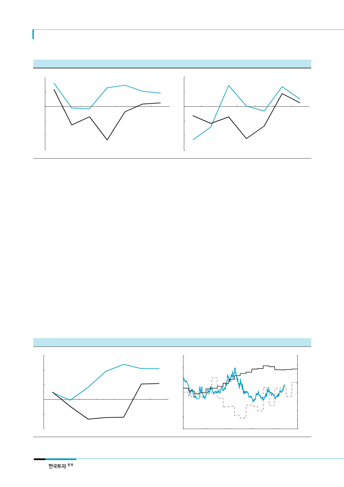

대한항공(003490)
[그림 9] 2017F 국제선 RPK +4.2%, 운임 +0.7% YoY
(% YoY)
8
국제선 RPK 증가율
4
[그림 10] 2017F 화물 FTK +5.4%, 운임 +3.5% YoY
(% YoY)
8
화물 FTK 증가율
4
0
0
원화 운임 상승률
(4)
(4)
원화 운임 상승률
(8)
(8)
(12)
2012
2013
2014
2015
2016 2017F
주: RPK는 여객수송 실적지표로 유상 여객수에 이동 거리를 곱한 값
자료: 대한항공, 한국투자증권
2018F
(12)
2012
2013
2014
2015
2016 2017F
주: FTK는 화물수송 실적지표로 유상 화뭍중량에 이동 거리를 곱한 값
자료: 대한항공, 한국투자증권
2018F
우려요인보다는
꾸준한 이익에 주목
17F OP 1조원 유지
3. 그 동안 소외되었던 만큼 주가 상승여력 충분
주요 리스크 요인은 경쟁심화, 유가와 원달러 환율 상승, 그리고 여전히 높은 외화차입 부
담이다. 근거리노선에서 저비용항공사의 공세를 피할 수 없으며 중국항공사들과의 경쟁이
심화될 것이다. 다만 대한항공이 집중하고 있는 장거리노선은 내국인 아웃바운드 중심의
시장이며 미국 1위 FSC 델타항공과 협력하고 있어 경쟁우려는 제한적이다. 1분기 유가상
승에도 우리나라 국제선여객은 전년동기대비 11% 늘어 탄탄한 수요기반이 입증됐고, 2분
기에는 유가와 환율이 다시 하락하고 있다. 외화환산손익의 변동성은 리스크이나, 부채비
율이 작년을 고점으로 올해 743%, 2018년 621%로 하락하는 개선 방향성에 주목한다.
하반기에도 부담스럽지 않다
3분기 사상최대 분기 OP
결국 한진해운이라는 커다란 리스크를 제거하고 보면 대한항공에 대한 다른 우려들은 늘
어나는 본업의 이익으로 충분히 만회 가능하다. 올해 영업이익은 1조원으로 유가 상승에
따라 전년대비 8% 감소하나, 2015년에 비해서는 17% 증가할 것이다. 현재의 완만한 유가
상승세에 비추어 연평균 항공유를 배럴당 65달러로 가정할 때 유류비는 전년대비 23% 늘
어날 전망이다. 하지만 안정적인 국제선여객 수요와 5년 만의 평균운임 반등이 주가에 더
긍정적이다. 3분기 성수기효과와 4분기 추석연휴로 장거리노선의 이익모멘텀은 더욱 부각
될 것이다. 하반기에도 증시 강세가 이어진다면 경기순환주이면서 수요증가가 구조적인
대한항공에 대한 투자매력은 더욱 높아질 것이다.
[그림 11] 경쟁심화, 유가상승 영향 제한적, 4년 만에 순이익 흑자전환
(%)
12
영업이익률
8
4
순이익률
0
(4)
(8)
2012
2013
2014
자료: 대한항공, 한국투자증권
2015
2016 2017F 2018F
[그림 12] 대한항공 늘어난 영업이익을 주가가 반영하기 시작
(천원)
60
50
40
(십억원)
400
1.영업이익(우) 꾸준히 유지되고
300
200
3.주가(좌) 상승 이어질 것
100
30
0
(100)
20
(200)
10
2.순이익(우) 반등하면서
(300)
0
Jan-13
Jan-14
Jan-15
Jan-16
Jan-17
(400)
주: 항공업종 이익은 계절성이 크기 때문에 4분기 이동평균을 사용함
자료: Quantiwise, 한국투자증권
6